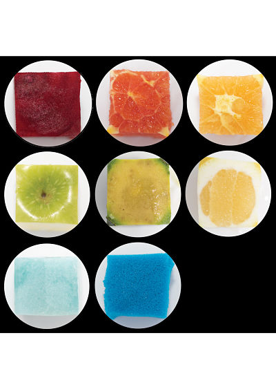

מעגל הפוך
במהלך סמסטר א' בפרויקט הסיום של קורס תקשורת חזותית וגרפיקה ממוחשבת לקחנו יצירה קיימת ויצרנו לה גרסה משלנו. בחרנו ביצירה הנקראת מעגל הפוך של רובין רוד.

ניתוח היצירה
ביצירה המקורית עיגולים מושלמים על פי ספקטרום שבירת האור על קיר שמעט סדוק. שני אנשים לבושים שחור לבן בקומפוזיציות שונות בתמונה. לפי הפרשנות שלנו, היצירה מביאה ביקורת על השאיפה לשלמות באמצעות הטכנולוגיה והחדשנות, אך לא תמיד זה מצליח.
הגרסה שלנו
בחרנו להראות מוצרים שבמקור שלהם הם עגולים עמו פירות וירקות והפכנו אותם לריבוע שהוצב ונחתם בתוך עיגול. העיגול מסמל את השמלות והריבוע מסמל את הטכנולוגיה והחדשנות. שני אלו כמקשה אחת כדי ליצור את הניגוד בין הרצון לשלמות לבין המציאות. שמונה עיגולים שכמעט סוגרים ריבוע, עיגול אחד חסר כי תמיד ישנה שאיפה לשלמות אך לרוב אינה מתקיימת.
